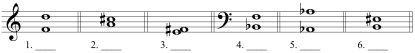

1. Specify only the number, not the quality, for each example.🔗 Answer. 1. 6, 2. 4, 3. 2, 4. 8, 5. 7🔗 🔗 🔗
2. Identify the interval quality and size for each example.🔗  Answer. 1. M6, 2. M3, 3. M2, 4. P5, 5. P8, 6. +4🔗 🔗 🔗
3. Write the following intervals above the given note.🔗 Answer. Upper notes: 1. \(\text{D}^♭\), 2. \(\text{G}^♭\), 3. \(\text{A}^♯\), 4. \(\text{B}\), 5. \(\text{A}\), 6. \(\text{F}^♭\)🔗 🔗 🔗
4. Write the following intervals below the given note.🔗 Answer. Lower notes: 1. \(\text{G}^♯\), 2. \(\text{E}\), 3. \(\text{F}\), 4. \(\text{G}^♭\), 5. \(\text{F}^♯\), 6. \(\text{B}\)🔗 🔗 🔗